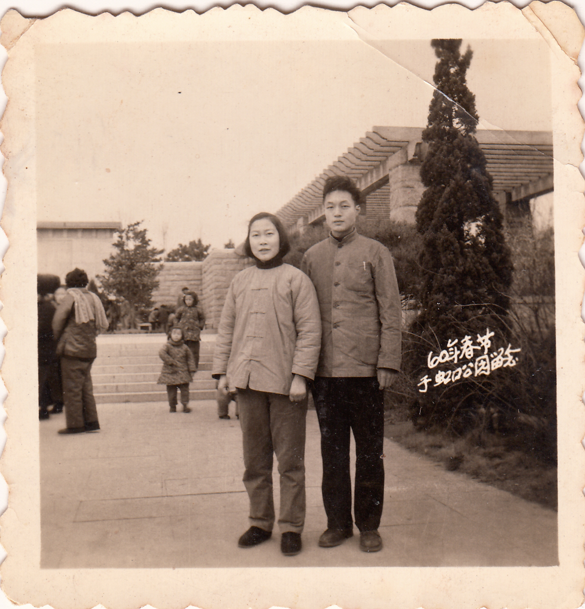
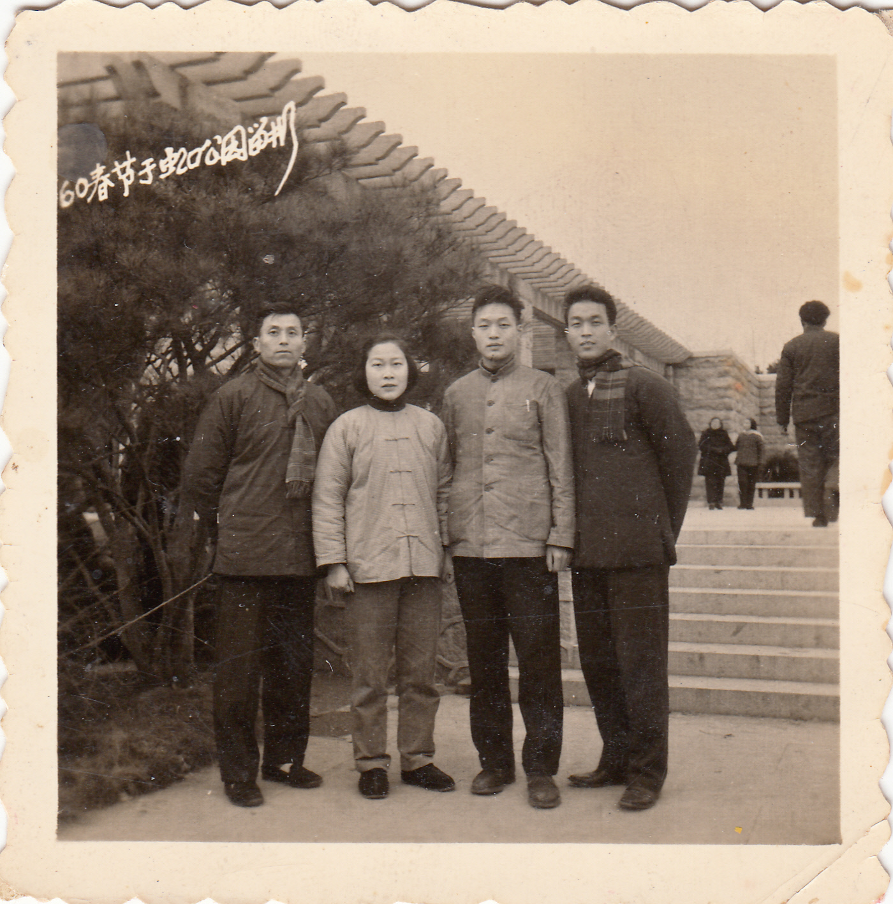

有缘
①有缘
无缘是短暂的如白驹过隙，而有缘却需要漫长过程，缘份的显露须有一定时段，请诸位不要焦急，听我慢慢道来。这卫星厂迟早要集中，三、二人的小厂更得先行，我这就调到了中心厂。中心厂的规模也不大，就二套石库门，右边的前楼是科室，左边前楼是宿舍，底层是车间，工人仅不足20人。力力厂是由几个人合伙的，大股东忻元达系东钱湖陶公山人氏，据说凡姓忻者均出生于此，古时有一公公和媳妇避战乱至陶公山，后生息繁衍，故从此改姓，否则哪有独此陶公山忻氏也，此事我曾多次与姓忻者求证，均都认可。元达好友几人原本在天津经营五金生意，后来沪兴办螺丝厂，员工所籍甚广。老板广交友，青工各相聚。都是同龄人情趣相投，有广东人，湖北人，江阴人，当然宁波人居多，还有一位退休的老爷叔住在一起。会计王宗先东北沈阳人，他睡办公室，家室在老家，常同我们外出散步，讲些日式教育的趣事，什么并肩过街人先我后，三人行必有我师，好多都是咱老祖宗的名言，只是人家把它纳入系统教育罢了！韩长根酷爱美术而改名若美，与我关系不错，我去力力后未见他在车间劳作，照理一个团支部委员是不脱产的，大概有什么特殊的工作需要，后来他被调到教育系统。他是来动员我入团的，只是我缺乏热心，这也是我愚蠢一桩。寝室里的人大多都上夜校，每周三个晚上，回来为了省钱自己搞点吃的，好在厨房有煤气方便着呢。
数风流人物还看荣福，荣福何许人也?系首任公方代表，姓杨，斯文人也，因往卫星厂安排其情人任流动会计，被人联名举报遂解职易厂，在办公室有他满满一箱私人信件也懒得清理，别人就把它放在我们宿舍陆荣发床前，因为他们是表亲。这信全是南京市政府一位女性文员用机打印以姐弟相称，我开玩笑把它念成荣发弟。同室陆荣发和陆亨均和我都是同龄人，弄堂口有家小店，店主有二个女儿，先是荣发与妹妹徐妙英谈朋友，再是陆亨均与其姐姐谈恋爱，结果二对均未成功，荣发是人家嫌弃，亨均是因人传言而拗断，还将那女子最后一封信给我观看，信很长，我只记住一句“鸟将亡，其鸣亦悲，人将死，其言也善”，其情甚为悲哀。俗话说：麻雀虽小，五脏俱全，做个雀头也着实不错，现去他厂只能充当雀羽，从领导滑倒中层。从他们的谈吐中，这联名举报者中亦有王宗先。上海人就是要瞎起哄，尤其是略带桃色就特别来劲。这一次王大难临头，被扣上坏分子，80几元月薪减到70元，免去财会工作下车间劳动，没有张榜公布，晚上仍可睡办公室，可能是宿舍挤不下。王在东北念高中时填写了一张国民党的入党申请书，实际上你只要主动交待就没事了，而且领导还作了暗示提醒。王未接令子，心存侥幸或者是真的忘记，这样就要组织处理。我估计当时处理也有难度，光凭一纸申请书难以定罪反革命，但作为坏分子又无劣迹，只能两者捡其轻。年轻人容易犯错，在力力我也曾经半夜进过派出所。
宿舍满员又住进一位姓樊的党员，那时党员很少，大家很少与之接触，再说年龄也不在一个层次，大家闲得无聊的时候就玩玩牌，开始倒也呒啥，后来有人提出来钱，那就是赌博了，大家上了瘾，连着二天玩到半夜，第三天夜里民警来了将我们带进派出所，大家都说是老樊通报派出所的，我看只有他，现在想来是他挽救了我们。我这人从来不信宿命，但奇怪的是缘分越走越近，宿舍迁至颐乐里，原来那里有一家大概叫兴中的螺丝厂，是醒狮的卫星厂，厂撤走房空了出来，那时候服从是无价的，58号房就成了我们宿舍，相邻的56号是我后来的岳父家，墙上还开了个放话机的小窗。宿舍除了老爷叔另行安排，基本都去了。与缘相关的陆亨均和王宗先也去了。明史有句话叫“尾大不掉”，尾巴大了掉不下，要篡位夺权，把它形容中心厂很恰当，要开一个全场职工大会还得去利达厂，然而利达厂这条尾巴是不会来争夺位置的，钱万夫过去是国民党区党部委员，正提着心吊着胆地过日子，那中心厂的办公室总得弄得像样点吧，那只有让宿舍易地腾出来做办公室了。开始宿舍基本满员，后各种原因走了几个，显得有点宽畅了，老王想的周到，带我们去怀兴里里弄食堂去办理搭伙，这里的饭看上去量很多，那时候的新发明叫双蒸饭，经过二次蒸煮，其实这是用眼睛去骗肚皮。时间久了，贴隔壁也熟悉了，放话机的窗打开也可打招呼，陆还跑到56号去侃大山，炳富那时可能已念初中，学校就在对马路，所以常见他在家。奇怪！这攸关终生大事的事情其细枝在我脑海竟然是一片空白，幸好末节尚存。也许此事一开始我就把它当成他人之事。现在只能根据逻辑推理来构造过程，但绝非虚构。事情是这样的：我们三人在北南门(弄堂的高阳路出口)，须臾，人齐先去鲁迅公园，这是当时的通例，游园毕，逛四川北路，那么以后呢？以后的事以后再说吧！
我们四人走至天潼路，见天色已晚就在新雅饭店用餐，膳毕结账才十元钱，这是我份内事(菜是由他们点的)，宁波有句老话叫垄糠搓绳起头难，人家给我起了个头，以后的进程就要靠自己了。几天后我就把她约出来，字条不用转手直接交与即可，藏头诗一首：“高空夕阳西斜照，阳光业将全耗尽，路旁不坐心中焦，等候姗姗田上草”。现在我记起当时我们约苗娣出来并非是一张字条那么简单，而是由老王组稿的一篇短文，王高中毕业，系那时的高学历了，记得文章开头是：值此新春佳节......,时间应是59年春节。那藏头诗大家说写得不错，我亦有同感，短短28字把时间，地点及相关联人物交待得一清二楚。是否由此发起攻势呢？且慢！
宿舍迁至唐山路后不久，工作调到利达厂，烦心的是三班倒，因而闲暇有限，苗娣读书正忙，她同炳华同届同校不同班，二人相差三岁，这三年是因何拉下的?我岳父母是一个辛勤节俭的家庭，岳父手艺很高收入不菲，也无重男轻女的思想，而翁家无论男女均很聪颖，绝无学习跟不上之虞，那竟是何因？那是难忘的1945年七八月间，二个女孩正在弄堂里玩耍，突然间天空黑压压几架美军轰炸机正在低空盘旋寻找目标，瞬间扔下的炸弹偏离了预设目标，姐姐被弹片击中要害(太阳穴)，当场身亡，妹妹背部灼伤(小腿部还有弹片痕迹)呆若木鸡良久才哭成声，由此落下胆小怕事的心里障害，这个女孩就是苗娣，那时才五岁，是一个学前儿童，岂料此事竟拉下她三年学业。人们不禁要问，跑题了，有缘怎会与炸弹扯在一起?这是我的倒叙插入法，不仅有关且又是关键。七转八弯我住进了唐山路，而我二位家在宁波的师弟却不知所去，老王的策划起了一定的作用，但关键还是拉下那三年的学业。如果没那三年,届时苗娣可能已高中毕业，起码初中早已结束，那就无缘了，在此我切换主题，进入儿童晚班。
 ②儿童晚班
这个称谓是49年招生入学儿童时才出现的，连年战乱致使大量儿童滞延入学，教育资源匮乏，为了使儿童受到正常教育，小学分成上下二部，下午让一些年龄大的儿童上学故称儿童晚班。几年后国家教育经费投入有限，正常入学仍有压力，有些学校仍分上下二部，那时称二部制。颐乐里遭炸不久，日本战败投降，人们沉浸在欢乐之中，社会需要休养生息，住房修缮与建造热度上涨，岳父经营的土木工程业务兴旺，进来了不少的徒工和师父，大伯的继子葛安定也来学徒。岳母是个很能干的女人，负责那么多人的伙食，大家都夸她的厨艺。大阿姐成了得力的助手，家里呈现欣欣向上的景象，经济也比较富裕。一位同事对我讲(劳作场地分散见面仅搭头而已，很少闲聊)：巴普洛夫说：人见到别人吃食会不由自主地咽口水，这种现象叫条件反射。空袭后次年，苗娣正当学龄报了名，开学第一天，回家就发烧，在家约待二、三天，再去学校又发烧了，是否是弹片的恐怖联系到环境的变化，形成了条件反射，就这样只好辍学了。我是胜利后入学的，当时允许老师体罚学生，老师的讲台右方放着一木条叫“戒方”用来打学生手心，再加上有的老师表情威严使胆小的怯而生畏，若与过去不寻常经历相联系，自然地产生了条件反射。据苗娣讲父亲家境贫寒，幼小学徒，我见过他写的字很有功底，他还会描绘图纸，计算材料十分精确，父母的优良使子女都善于读书深造，苗娣也不例外。子在川上曰逝者如斯夫，时光像流水似的一晃三年过去，恐怖的一幕渐渐淡去，再次入学一切正常，只是年龄稍大了些，学校把她们编在一起叫儿童晚班。不知不觉树轮增了好几圈，小学毕业了，和炳华一起进中学，她的班基本是晚班同学，她是班长，大家相处甚佳。大家想知道澄衷中学来历么？这里我推荐一位向导叫陈粹卿。陈粹卿我们多次全国订货会议在一起，比我年长，喜欢与我闲聊，一次谈到澄衷中学，他说叶澄衷是他外公，于是拉开了话匣子，那时他外公在苏州河边撑渡船，苏州河上桥很少，人们为了不兜圈子都采纳摆渡，一次一老外把皮包遗漏在他的渡船上，他外公一直守候至天暗下来，老外惊喜地发现这位诚信的中国船工，为他守护着皮包。老外见叶婉拒谢金，更觉此人诚实可信便说自己有几艘货轮常泊浦江，正愁缺人补给供应，你是否可以帮办，叶应承下来。从此叶财源广进，还顺便做起了五金生意，在苏州河北岸乍浦路上开了家苦仔铁行，高尚的人不改本色，乐于举善于是办起了澄衷中学。今天我再来说一个坊间传为美谈之事，主人公是陈粹卿之哥陈武卿。陈武卿早年留英，回国后在乍浦路开了家斌诚电焊条厂，后任公司总工程师。70年代陈与保姆商讨解除雇佣关系，谁知保姆早已把这里当成她的家，不愿离去，表示不要工资，即这样陈就说把每月的收入都交于保姆，让保姆当家。全家三代人都把她当做亲人，孙辈们都叫她阿娘，甚是亲切，最后此人在陈家养老，被坊间传为美谈。
苗娣是班长又是团支部书记，人际关系融洽，有的比她小，把她当做大姐，走得较近的有沈德宝，沈宝奇，直至近几年还常来问候。班主任朱老师对她很器重，认为她是一位得力的助手，凡事认认真真一丝不苟又勤奋好学，成绩总在前列，我认为这是传承父母的优点，又是光阴似箭三年很快过去，快二十的人了，不能再叫儿童晚班。
③无奈退学
彼时把初中毕业作为社会分流，成为各类人生的交叉路口，有升高中图再深造，有中专技校学徒等等以减轻家庭负担，其中好的中专颇有难度，苗娣姐弟俩都考入顶尖的中专，一个是船舶，苗娣是毛纺。我们是之前相交的，这段时期她也忙于未来，关系处于不即不离，现在可以互通书信了。纺校在中山公园附近，基本是每周回家，在书信往来中发觉她字迹端庄，文笔不错，确实在学习上是个拔尖的人物。一次信中让我打字谜，一是春雨连绵妻独宿，另一是，东十八，西十八，二四得八，一八得八，这个我没猜出来，诸位有兴趣不妨一试。我那时三班倒，厂休又是周三，见面机会相对较少。从晚班开始至今近十年，在人生的十字路口将要各奔前程，交流一下情感是很有必要的，且平时都很庄重。一次在东海电影院门口刚好电影散场，她与一位同学一起出来，几位同学的名字她提起过，但与我从未谋面，那位同学叫沈德宝，当然是她同我讲的。沈是孤儿，由奶奶养育，从小缺少父爱和母爱，把苗娣当做姐姐，这是姐弟之情。这是小事，但局中人难免过虑，原来我同岳父母关系不错，岳母也曾说过：一个孝顺父母的人，人品一定好，所以时间不长，我已叫爸妈，遇此事我又改口叫阿蓓姆妈了。说句不雅的话我吃醋了，但书信仍有往来，且热情未减，我的担心是多余的，称呼又得改过来。时间短暂，没留印痕，人家同为班干部，同学情深。
她对纺校相当满意并寄予美好的企望，有时还谈谈室友的事情。毛纺是纺织业的佼佼者，邻居水玲在毛纺厂工作工资很高，待遇很好(后来进厂就不一样了)。晚年她还谈起当年她可以中医带徒弟，这倒是一个很好的职业，不管怎样，我要为她高兴。也是为我们高兴，憧憬着三年后的未来，一场难以预料的袭击改变了人生轨迹。纺校就读一学期，至59年冬春之交，她突发高烧口吐献血，当时我住有色厂在卢湾区，他们也未来通知我，待厂休日我来看她，才知她大病一场，开始当是肺炎，后来才知是肺结核，这病需要漫长的治疗，不得已去办理退学，档案退回社区成为社会青年。命运如此多舛，人生十几年的金色年华遭遇二次退学，幸亏她顽强以对战胜病魔。
④养病
心情对病情至关重要，近几年她对子女提及我当时未嫌弃她，让我好不自在，确实当时对她的鼓励和支持有益于她恢复健康，听说蛤士馍对肺有益，第一医药有售，价很贵，我只买了一两。父母的关爱更无法比拟，托人从香港买来抗结核药，地段医院中医治疗亦很有疗效。综合各方有利因素，归根结底还是她本人的顽强意志。既来之则安之，很奇怪从开始见到她时没感觉患过大病，可能是来势迅猛退潮亦快。一段时期以后早上去外滩走走，与一位姓俞的中年人相识，教她打太极拳，休息时闲聊交谈，那俞老师年轻时得过肺病，彼时属于绝症，像现在癌症一样恐怖。后来他住进了尼姑庵竟然病情好转身体康复，还养成坚持锻练的好习惯。后来她想练太极剑，岳父为她做了一柄木剑，人家是用桃木做的，那是挂在床头系镇邪之物。练术剑则要美观结实耐用，这把剑是用柚木做的。我反正无有去处，长休来陪陪她，热天的时候，晚饭后散步去外滩公园，每次几乎坐在一块固定的石墩上望望星空聊聊天，九点过后送她回唐山路，有时在外滩分手，我终极是回厂，情趣甚为滋润。寒来暑往大概也有年余，过去常去看望我姐，后来也去得少了，现在有个好的去处，好像自己有了家的感觉，长休日我很早到了她那里，常去看电影，她人实在不图虚荣，一般我们不去头轮，还多数上午看电影，她的气色很好，但要想工作很难，我提出换一种养病方式，她满口同意。
天机已泄，增添热闹，但泄无妨。她对这个方式非常高兴，我把它叫做易地养病，易地到故乡慈城。我买好火车票是晚上十二点，之前我们在候车室边候边聊，时间倒也未觉漫长，这是她有生以来首次出远门，次日午后车靠慈城，我的家人都在月台迎接，除了没挂红地毯外规格还是蛮高的，几天后收到她的来信，满怀洋溢兴奋之情。凌家老屋已被征用为联合诊所，杨家门头也作他用，纪哥是镇上干部，出让祖屋他得协调，其意是非让不可，我们二家一起搬到中山路103号，那时佩儿尚幼可能还未记事，后来再搬到西莫家巷，附近还住着一位前清遗老头顶盘着辫子。苗娣来信说：她认识几位青年是夜校里老师，自嘲是22只老唉(宁波人鸭子的叫法)。何谓22只老唉？那些青年本无工作但有文化，让他们搞点工作每月给他们22元津贴，大家看这2像鸭子吗？自嘲由此而生。收入低微没法成家均为光棍，有句话叫光棍快乐似神仙，生起病来叫皇天，苗娣善于处理人际关系与他们相处甚好，那光脚的反而乐天，整天乐在其中，她早已不再服药，身体完全恢复健康，那时我在上海有点事情。啥事？厂里要我去崇明围垦，为期一年，我很高兴地去了，那时新发了一种票子叫鱼票，岳母为我做了干煎带鱼，这味道太鲜美了，至今还在脑海中回味着。在崇明没有休息日，有也没用，去哪里？二月回上海一次休八天叫轮休，到单位领工资，辅助粮票报销等。大概是最后一次积假四个月计十六天，这可是长假啊！正好留作他用。暑期里我的几位外甥都喜欢玩水，这个节气是我家餐桌鱼虾最丰盛的日子。要说外甥们玩水，那都是四弟带出来的，暑假里带他们学游泳，其中家范水性最好，他能潜入桥洞最深处，毋用把水搅混直接抓鱼，游泳最好的是伯范，其他几个个个似浪里白条。水里玩够后见天色已晚，开始捕鱼作业，回家时门口早已人们等候欲购，外甥们说：这要问过外婆...。外甥捉的鱼虾自家都吃不了还可卖出，蛋白质的足量补充能提高人体的免疫功能，再讲慈城是丘陵地带据说富含硒，其菜蔬不仅味美且富有营养，这硒对人体益处很大，我在报章里看到讲：东北有一地叫克山，克山病就是由缺硒引起。而慈城却是一个难得的富硒地。心情舒畅，营养丰富，空气新鲜，水土宜人，痊愈却病，那就回上海吧！
⑤返沪
我去崇明一年期满，最后一次假是二次并一次，就是前面所说的十六天。她慈城待久了想回上海，因为最终出路还是在上海，正好利用长假接她回来。那时大概是62,63之际，国家经济开始好转，开放了自由市场，何家的租赁店也活了起来，店堂里停着二顶花轿常有人问鼎，市场欣欣向荣。六弟讲过将官岭有个康王藏身的山洞，我也听说坊间各种传说，现在我来虚构一个情节：将官岭边上有条小溪，一个女子正在洗涤，见康王逃至此，叫他藏在倒扣的竹笼里，骗过金兵安然脱险。这康王是宋高宗，后下旨曰：浙女尽皇妹，所以这花轿特别富丽。出莫家巷右拐就是何家店铺，里面赫然停着二顶花轿，说起来老夫妻还是老屋的邻居，也是房客，我每每回家总是去看他们。慈城就姐弟几家，近亲很少，远亲互不走动，名胜早已破败，古迹荒芜唯剩残垣，但终究是故乡我得陪她去走走，得有个对故乡的留念，东门外有清道观，南门城角尚在，西门大宝山已成采石场，山上朱洪山烈士墓还未迁移，再往上，山顶上有一炮台是朱贵将军父子抗击英军壮烈的地方。慈城最瑰丽的地方那就是北门慈湖。怀有美好的念想离开了慈城，到了上海又重复了过去，别看她平时不声不响却有了较强的社交能力，不久便在街道团总支帮闲，每月津贴15元。我们不在乎收入低微，只求摆脱无所事事，至今我也未问及慈城代课之收入，估计也只有15吧！这是对当时闲散待业青年的统一价格，时间还达几年直至66年底。
⑥成家
男大当婚，女大当嫁，这是人类繁衍生息的铁律，我也快30的人了，不管她是15元还是16元。情感基础很牢固，该成家了。房子是一个大问题，好在苗娣是个节俭的人，平时花销节俭，手头尚有些积攒，花了560元在棚户买了一间房，尽管咯吱声响，倒也楼上楼下，岳父整修后倒还舒适通畅。我们于66年国庆登记结婚，不办婚礼，不设酒席，那时的潮流没必要有此讲究，大家都不会逆势而动，简单的家具，结实而便宜，凭证可买一只三五牌台钟，住进破窑就算成家了，就在此时她每月收入仍是15元。我有起早之习，所以负责买菜，她规定每日菜金五角，当然这只是说说而已，我们生活得不错，水果从不间断，高档的不买。我们大多是人都没有居住棚户区的经历，那里人际关系纯真，左邻右舍因挨的太近，好像如一家人似的。用水在给水站，家里放着一口不大不小的水缸，太大要占地方，大概可放六铅桶水，给水站距家约200米，用小竹片抵水资，往家里储水是我干的，但有时会离家几天，她总会解决问题的，这个地方是热闹有余，没有冷清，常有助人之举。